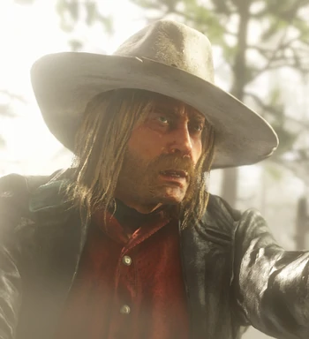

Micah Bell
Criminel et tueur à gages professionnel. Indomptable et imprévisible, il ne vit que pour l'action.
Histoire
Micah Bell III est le petit-fils de Micah Bell Sr. (dit Micah Bell I) et le fils de Micah Bell Jr. (dit Micah Bell II), un hors-la-loi. Né en 1860, il a un frère, Amos Bell, et plusieurs nièces.En 1877, il est en cavale aux côtés de son père après le double homicide de Roscoe et Jean Briggs, que Micah et son père ont pendu avant de leur trancher la gorge. Micah a donc été le partenaire de son père avant que celui ne meure ou que leurs chemins se séparent. Peu de choses sont connues du passé de Micah en-dehors de ces événements.
Micah évolue alors en un tueur à gages sans pitié, réputé pour être assez sanguinaire et sans scrupules. Il dispose d'un revolver qu'il utilise avec un Revolver Cattleman, le distinguant par cette utilisation duale de revolvers. Il est un excellent tireur, sachant tirer profit de l'imprécision et du manque de portée des revolvers.
Entre 1898 et 1899, il rejoint la bande de hors-la-loi de Dutch van der Linde.
En 1899, Micah est l'un des plus récentes additions à la bande de Dutch. Il se distingue rapidement par sa loyauté aveugle envers Dutch et son esprit de tête brûlée. Il reste un personnage assez antipathique pour certains membres de la bande, comme pour Arthur Morgan qui ne lui fait pas entièrement confiance.
Micah a alors l'idée de faire un gros coup : braquer un ferry à dans la ville de Blackwater. Ce braquage sera alors connu sous le nom de massacre de Blackwater. La bande vole $150 000, mais la situation tourne court lorsque les représentants de la loi, et principalement la Pinkerton National Detective Agency, sont tout près de capturer la bande de hors-la-loi. Dans la panique, Dutch tue une femme innocente, Heidi McCourt. John est blessé à la jambe, Mac et Jenny meurent, Davey est grièvement blessé et Sean MacGuire est capturé par les forces de l'ordre. Les membres survivants de la bande parviennent à prendre la fuite. Dutch perd une grande partie de l'argent volé dans la fuite, mais parvient à cacher le reste dans un endroit secret près de Blackwater.

Naissance - 1860
Statut - Décédé (1907)
Sexe - Masculin
Nationalité - Américain
Occupation - Hors-la-loi
Rôles - Antagoniste
Anecdote Micah surnomme Arthur "Crache-poumons" (à cause de la tuberculose) ou "cul-terreux".